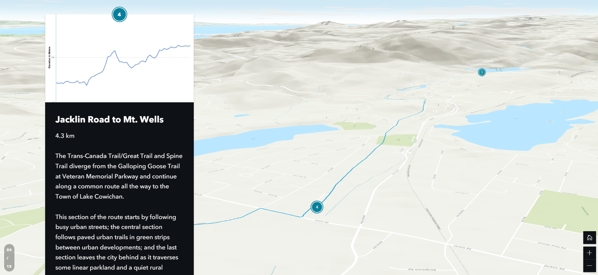

StoryMaps
The first solution we've produced to showcase the Vancouver Island trail system is an interactive Story Map which discusses the southern part of the trail system from the Clover Point trail head to the Runners Trail head. A total of 160 kilometres and 14 trail heads are displayed in this map, zooming into each head and describing the stretch between the current and the next.
ArcGIS API for JavaScript
The second solution that we've developed for this project is a map that uses ArcGIS API JavaScript to add further functionality to the StoryMap solution that was created and includes features such as measuring length using a polyline, which can measure how long particular parts of the trail are or even the whole thing, change base maps to see the Island trail in another perspective, display location to see where users are at a given moment, and an expandable widget that has features like zoom in/out, a compass, and rotation.